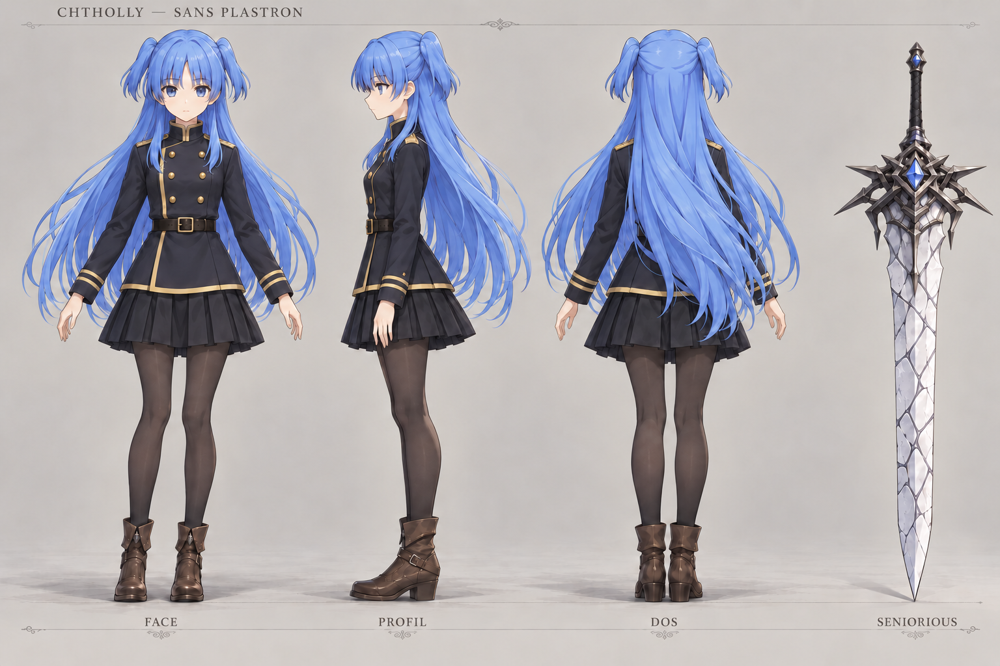
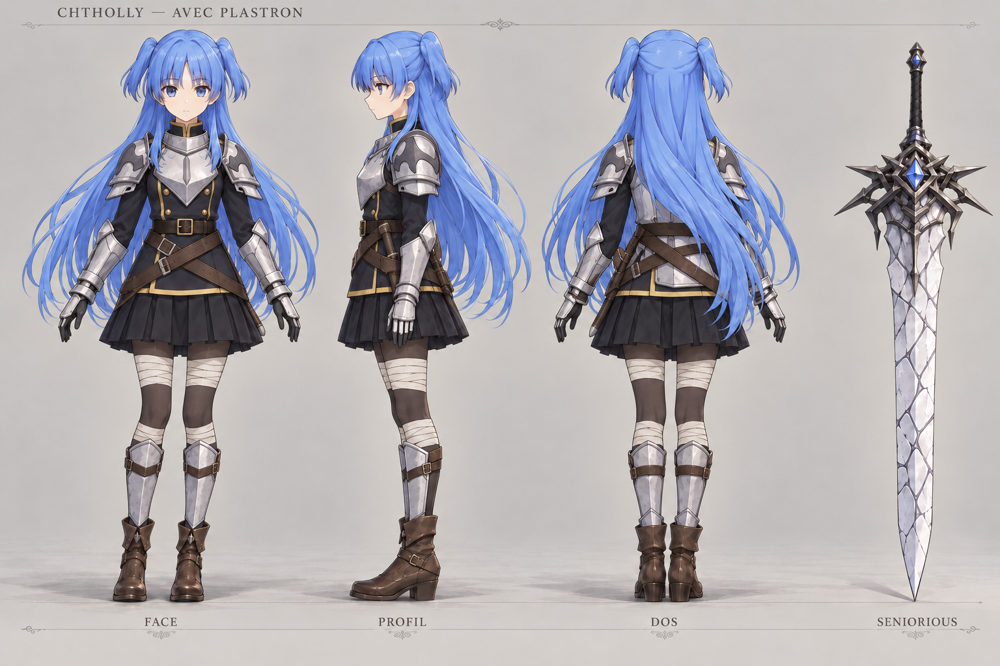
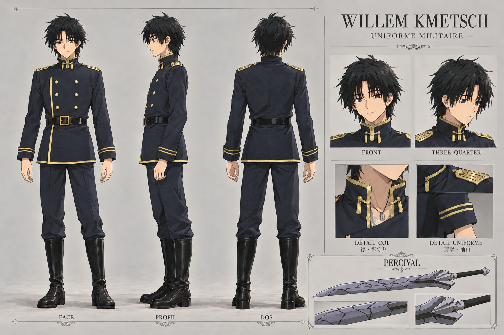
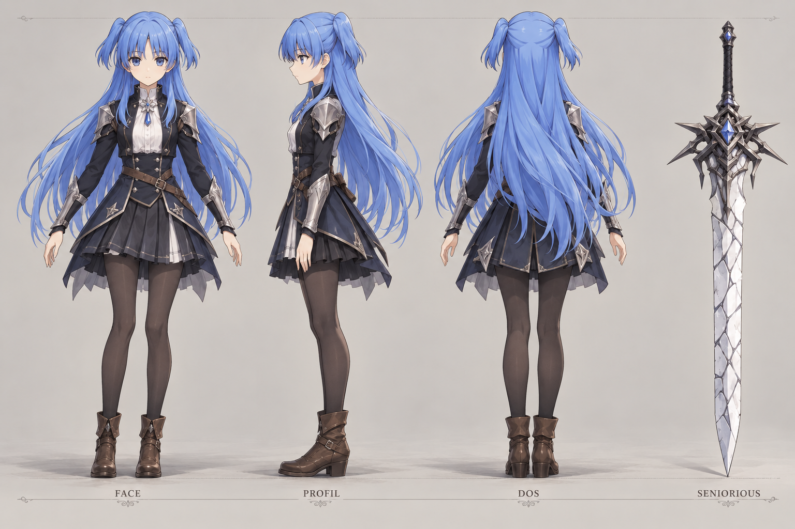
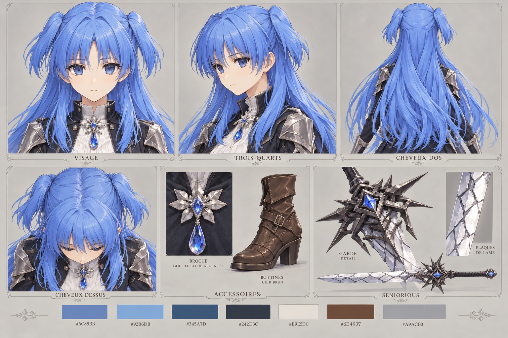

Willem

23 poses et portrait
Attaques et charges dépassent les cellules ; cycles à contrôler.
Télécharger l’original · 1536 × 1024Chtholly et Willem · Concepts à examiner
Proportions naturelles stylisées, visages anime sobres et matières détaillées. Ces images sont des planches concept 2D pour préparer de futurs modèles. Les nouveaux GLB, rigs et animations restent à réaliser.
Révision demandée : même Chtholly, veste militaire fermée à galons dorés et deux variantes d’équipement d’après le scan p017 (folio 016). La base de Seniorious est élargie. Les bas sombres et bottines brunes du concept précédent sont conservés. Willem et Percival suivent les scans p005–p007. Les autres personnages attendent leur validation.

Face, profil, dos et Seniorious · Uniforme militaireTélécharger la planche

Même tenue équipée du plastron, des protections et du harnaisTélécharger la planche

Face, profil, dos, portraits, détails du costume et PercivalTélécharger la planche
#6C89BB#92B6DB#345A7D#242D3C#E9E5DC#6E4937#A9ACB3#BBA366Sorties natives : 1536 × 1024. La cible de 2048 px de haut reste à atteindre. Cohérence des détails entre les vues et fidélité à revoir avant modélisation.
Ces deux planches restent disponibles à l’identique. Leur tenue, broche et ancienne largeur de lame sont remplacées par les variantes militaires ci-dessus ; les études du visage et des cheveux servent toujours de référence.

Historique · Tenue et lame remplacéesTélécharger la planche

Historique · Visage et coiffure conservés ; accessoires remplacésTélécharger la planche
Les 11 PNG d’origine sont conservés sans modification. Le fond quadrillé permet de voir leur vraie transparence. Les noms identifiés et limites sont indiqués pour faciliter leur réutilisation ; ces essais ne sont pas des atlas de jeu validés.
23 poses et portrait
Attaques et charges dépassent les cellules ; cycles à contrôler.
Télécharger l’original · 1536 × 1024
Deux expressions par personnage
Dernière rangée proche du bord.
Télécharger l’original · 1024 × 1536
23 poses et portrait
Pointes de cheveux ressemblant à des oreilles animales ; effets débordants.
Télécharger l’original · 1536 × 1024
23 poses et portrait
Épées et quelques poses dépassent les cellules.
Télécharger l’original · 1536 × 1024
Deux expressions par personnage
Petites marges en haut et en bas.
Télécharger l’original · 1024 × 1536
Variante aux effets bleus accentués
Arme flottante à la libération ; effets traversant les cellules.
Télécharger l’original · 1536 × 1024
Deux poses par personnage
Quelques pixels parasites en bordure ; romanisations indicatives.
Télécharger l’original · 887 × 1774
23 poses et portrait ; robe des références
Deux charges ont les jambes coupées ; effets et armes débordent des cellules.
Télécharger l’original · 1536 × 1024
Huit poses par personnage, grille 8 × 4
Corps complets ; portraits indépendants absents.
Télécharger l’original · 1536 × 1024
Variante avec effets plus lumineux
Mêmes réserves de coiffure et de découpage.
Télécharger l’original · 1536 × 1024
Deux expressions par personnage
Dernière rangée proche du bord ; romanisations indicatives.
Télécharger l’original · 1024 × 1536